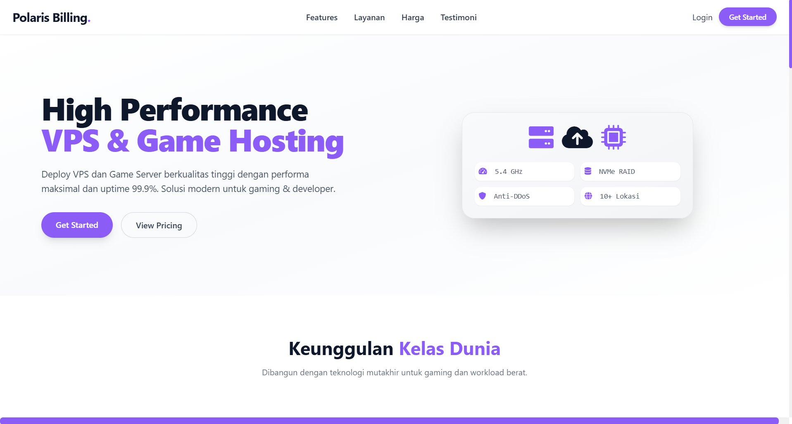
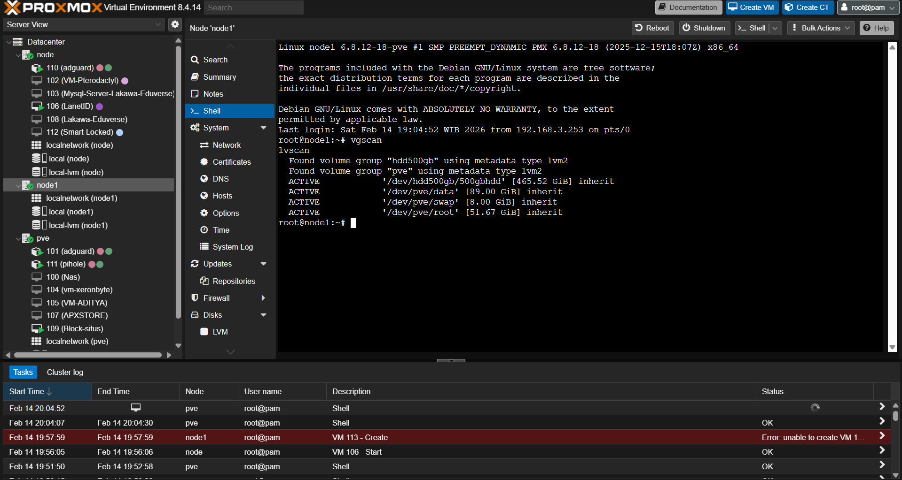

PHP Native · Tailwind · MySQL
Billing
Billing yang saya bangun dengan PHP native. Server di Pterodactyl dibuat otomatis setelah pembayaran, dan pembayarannya langsung di dalam billing melalui Midtrans.
Saya membangun website dengan Laravel dan Tailwind, mengelola database MySQL, menyiapkan sistem billing hosting dengan WHMCS dan Pterodactyl, serta mengelola infrastruktur datacenter — dari virtualisasi Proxmox sampai firewall MikroTik.
$ whoami developer server & website $ cat stack.txt web html · css · js · tailwind backend php · laravel · python database mysql · mariadb · phpmyadmin hosting whmcs · pterodactyl · billing infra proxmox · mikrotik · chr $ systemctl status siap-kerja ● active (running)
Area yang saling terhubung: website yang dilihat pelanggan, database yang menyimpan datanya, sistem billing yang menagihnya, dan infrastruktur yang menjalankannya.
Membuat tampilan website yang rapi dan responsif, termasuk memasang dan menyesuaikan theme.
Membangun aplikasi web dengan framework Laravel, dan memakai Python untuk skrip otomasi.
Merancang tabel dan relasi serta mengelola database untuk website, billing, WHMCS, dan Pterodactyl.
Membuat sistem billing, memasang WHMCS dan Pterodactyl, serta memasang theme untuk keduanya.
Mengonfigurasi Proxmox untuk virtualisasi dan mengatur firewall MikroTik, baik router fisik maupun CHR.
Website company profile, landing page, dan aplikasi web berbasis Laravel dengan tampilan Tailwind dan database MySQL.
Instalasi WHMCS dan Pterodactyl, pembuatan billing, serta pemasangan theme agar siap dipakai jualan hosting atau game server.
Konfigurasi Proxmox untuk VPS dan virtualisasi, serta firewall dan routing di MikroTik fisik maupun CHR.

Billing yang saya bangun dengan PHP native. Server di Pterodactyl dibuat otomatis setelah pembayaran, dan pembayarannya langsung di dalam billing melalui Midtrans.

Home server Proxmox pribadi yang terdiri dari 3 cluster.
Ceritakan kebutuhan Anda, saya akan balas secepatnya.